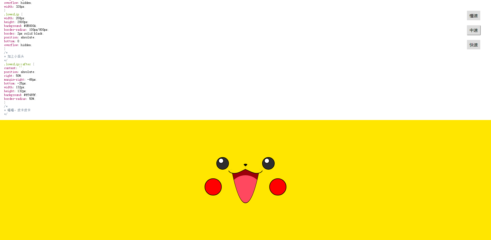

项目经历
多人共享博客
- 项目介绍： 该项目使用 Vue 实现了一个在线博客分享的平台。包含首页、用户文章列表、个人管理等页面，实现了登录、注册、编辑、发布等功能。项目使用 Grid 作页面布局，以 Vue CLI 为基础创建项目模版，使用 Less 作 CSS 预处理，引用 Element UI 作交互。通过 Vue Router 实现路由的跳转、异步加载、权限验证等，通过 vuex 实现状态管理，用 Axios 获取数据，并对接口进行了封装。
- 技术栈：Vue CLI/ Vue2/ Axios/ Vue Router/ Vuex/ ES6/ Npm/ Grid/ Less
- 项目源码:github.com/strayedyouandme/project
- 预览项目: 点击查看
可爱皮卡丘
- 项目介绍： 是一个使用纯原生 JS 开发的，动态显示 CSS 画一个皮卡丘过程的小作品。该作品主要思路是通过间隔计时器遍历预先设置在 preview 标签内代码，将其一个个显示在页面上，并在 style 标签上作同样处理，以使代码 CSS 生效。此外，实现了 CSS 高亮效果及调速功能。
- 项目源码:github.com/strayedyouandme/project/tree/master/Pikachu-demo
- 预览项目: 点击查看
简易在线画板
- 项目介绍： 是一个使用纯原生 JS 开发的，主要利用 HTML 5 的 Canvas API ，是我在学习原生 JS 及 Canvas 过程中开发的小工具。 其提供在 PC 及手机端在线画画、橡皮擦、画笔调色、画作删除等功能，并支持画作下载。
- 项目源码:github.com/strayedyouandme/grow-up/blob/master/canvas
- 预览项目: 点击查看
关于我
熟练 HTML、DIV + CSS 的页面布局，能根据设计图像素级完成页面制作 熟悉 HTML 5 及语义化，了解 Canvas 动画制作，掌握 CSS 3 动画、过渡效果等常用技术 熟悉原生 JavaScript，会使用 ES6+ 常用规范，了解 TypeScript，了解 jQuery 常用 API 及思想 熟悉 Vue 常用功能，理解如生命周期、组件、虚拟 DOM、数据响应式等概念，能够使用 Vue 全家桶开发项目，对 React 有一定了解 熟悉模块化、工程化开发流程，能够配置 Webpack 有移动端开发经验，会使用REM、vw/ vh、响应式 等技术制作适配手机设备的页面 了解 HTTP 相关知识，了解常见的 Web 性能优化方案 熟练使用 VsCode、WebStorm、Sass、Git 等开发工具
个人经历
2019 年 6 月毕业于辽宁轻工，在校期间成绩优异，曾多次获奖学金。 毕业后发现学校接触的前端知识较为浅薄，遂自学前端。 热爱 coding，享受调试代码及解决 bug 的过程，享受通过各种代码组合实现自己成果的过程。